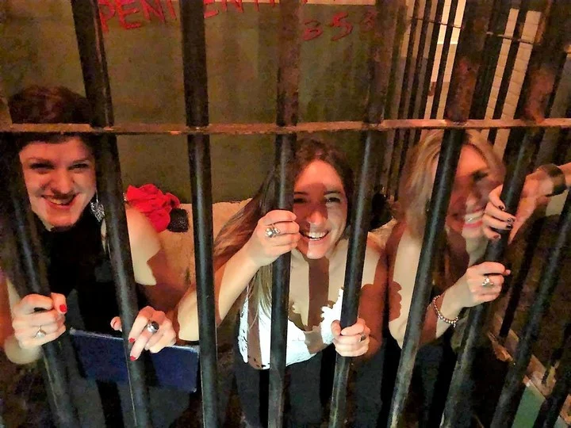

The Hole

Dentro de los hidden bars (“ocultos” detrás de fachadas casi ciegas) se destaca este de inspiración penitenciaria. Como todo speakeasy remite a los tiempos de la Ley Seca, la mafia, el contrabando y la cárcel de Alcatraz. Esa prisión por donde pasaron personajes como Al Capone fue recreada en estas coordenadas.

Los spots fotográficos son varios: hay celdas diseminadas en dos pisos, un auto antiguo, un decorado que simula la puerta de un banco y por supuesto, nadie escapa de esta cárcel sin la foto de prontuario de rigor. La coctelería es de autor y los bartenders están vestidos con los típicos monos color naranja que usan los presidiarios en los Estados Unidos.
Armenia 1743, Palermo. Abierto de martes a sábados de 20 a 23 horas. Instagram: @thehole_bar.